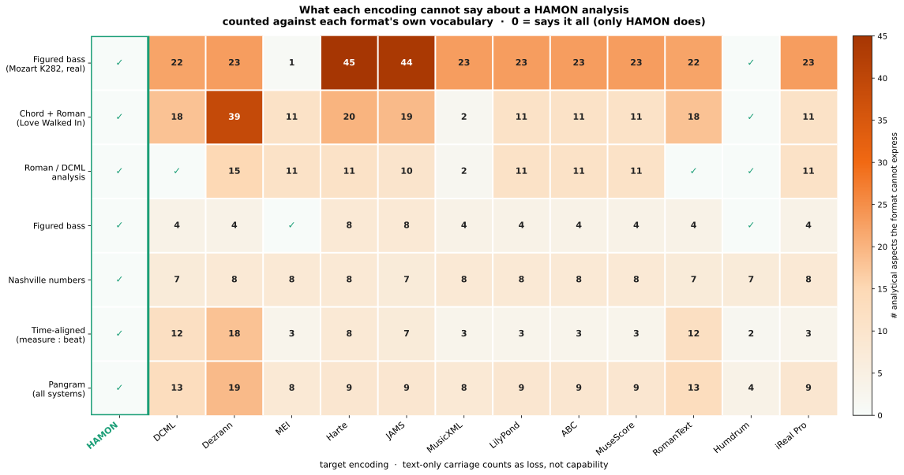

Bridging harmonic representations through a multi-modal encoding
Contributions. HAMON was designed and implemented by Patricia Garcia-Iasci and David Rizo. Johannes Hentschel and Fabian C. Moss took part as expert advisers, on the design of the standard and on the role it should play in the computational musicology community.
Each example is authored in HAMON and exported to every encoding using only that encoding's native constructs. What a format cannot natively express is really lost — unless a clearly-labelled out-of-band HAMON annotation carries it. Only HAMON keeps everything.
<annot>, a sidecar field) that carries the full surface — so the loss drops to
zero, except in formats that have no such slot (Harte .lab, iReal), which
stay lossy. All of this is text, from the Python reference hamonpy + the
capability model in hamonpy/capability.py. The engraved score is illustrative only
(music21 → Verovio, CDN); when it can't render it is omitted — a display limitation,
not a HAMON loss.

Interactive loss viewer
Pick an example: you get the piece, the bars we take, and the engraved score. The encodings that fit that analysis are shown as tabs (with their native loss); the ones that can't express it get a short explanation instead. Toggle Native vs Native + HAMON to see what a clearly-labelled out-of-band annotation recovers.
How to cite
Garcia-Iasci, P., Hentschel, J., Moss, F. C., & Rizo, D. (2026). Bridging harmonic representations through a multi-modal encoding. 4th International Conference on Computational and Cognitive Musicology (ICCCM26), Würzburg, Germany.
@inproceedings{hamon2026,
author = {Garcia-Iasci, Patricia and Hentschel, Johannes and
Moss, Fabian C. and Rizo, David},
title = {Bridging harmonic representations through a multi-modal encoding},
booktitle = {Proceedings of the 4th International Conference on
Computational and Cognitive Musicology (ICCCM26)},
address = {W\"urzburg, Germany},
year = {2026}
}Code and data. The library is
installable from PyPI as hamonpy, and the grammar, the
conformance corpus and the documentation are in the
public repository. Anything that
looks wrong on this page or in the standard belongs in its
issue tracker. The code is
Apache-2.0 and the standard and its data are CC BY 4.0,
and both ask for attribution.